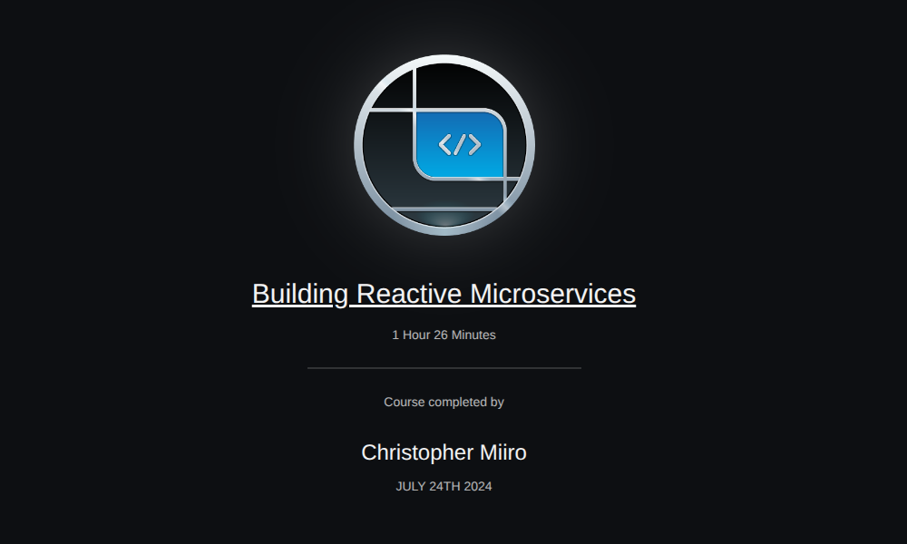
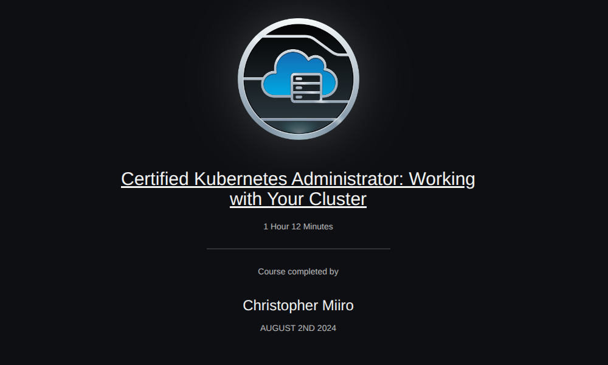
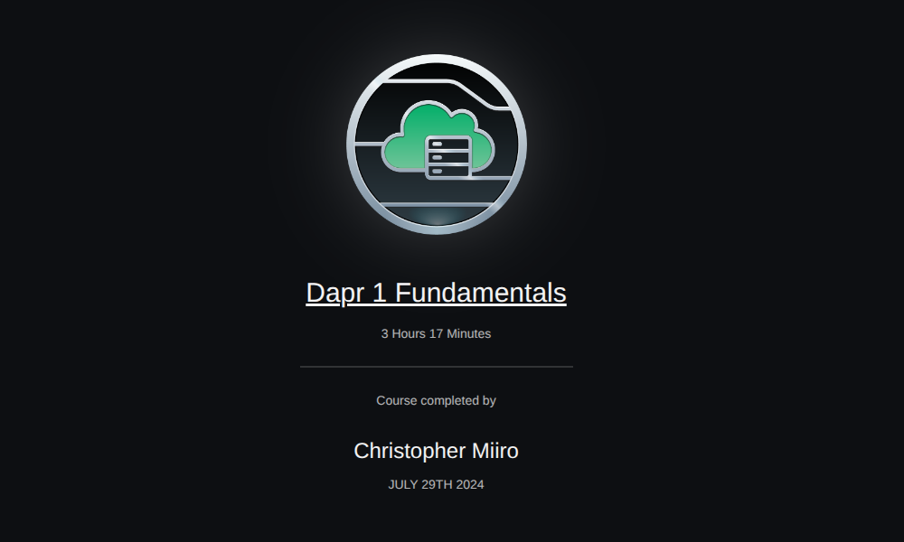
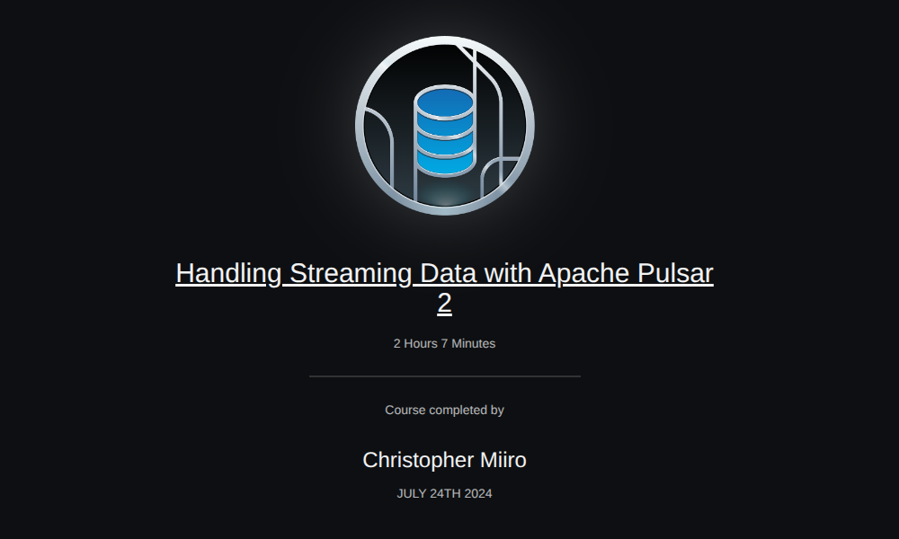

Founder & Technology Lead, Intuvance · Digital Economy & AI Practitioner · Software Engineer
Contact details are hidden publicly — full CV includes phone & email.
Technology practitioner, entrepreneur and software engineer with 10+ years of experience designing, building, integrating and supporting digital systems — spanning artificial intelligence, digital platforms, digital health, interoperability, enterprise systems and open-source technology.
Founder and technology lead at Intuvance Co. Ltd, a technology company developing and delivering practical digital solutions for complex real-world problems. Through Intuvance, I work across product conception, technical architecture, software development, AI integration, implementation planning, client engagement and delivery.
My recent work focuses on the intersection of AI, digital infrastructure and African development challenges, including offline-first digital health, AI-enabled platforms, skills and employment technology, enterprise productivity and inclusive digital solutions.
I bring a combination of hands-on technical depth and practitioner-led product development: taking ideas from problem definition and technical concept through architecture, prototyping, implementation, deployment and ongoing improvement.
My experience includes direct technology delivery in Uganda, Kenya and Botswana, as well as participation in international open-source and digital-health ecosystems.
AI · Digital Infrastructure · Healthcare · Education · Enterprise · Public-service applications
Concept → Architecture → Prototype → Implementation → Deployment → Continuous Improvement
Frontend · Backend · AI · Data · Infrastructure · Interoperability
Offline-first, AI-enabled digital health infrastructure for rural and underserved healthcare environments where connectivity, infrastructure and resources are constrained.
Research & development integrating locally-hosted AI into EMR systems — privacy-conscious AI at the point of care.
A digital platform connecting skills development with pathways into work and economic opportunity.
A business-management platform designed around operational challenges of small and informal businesses.
A transport and logistics platform concept within the wider Intuvance technology ecosystem.
Private AI services deployed within an organization's own infrastructure — practical AI with greater control over data.
Intuvance was contracted to provide technology enhancements for Visual Assistance Initiative Limited, an organization working on solutions for learners with visual impairments.
Note: Not an Intuvance-owned project — an example of Intuvance's client delivery work.
A continuing area of technical work involving integration of digital health systems and exchange of information across platforms.
Direct implementation experience through Uganda Cancer Institute HIE, BotswanaEMR and other OpenMRS projects.
Active contributor to open-source technology, particularly the OpenMRS ecosystem.




Available for technology leadership, AI integration, digital health, enterprise platforms and practitioner-led product development across Africa and beyond. Full contact details available in the downloadable CV.